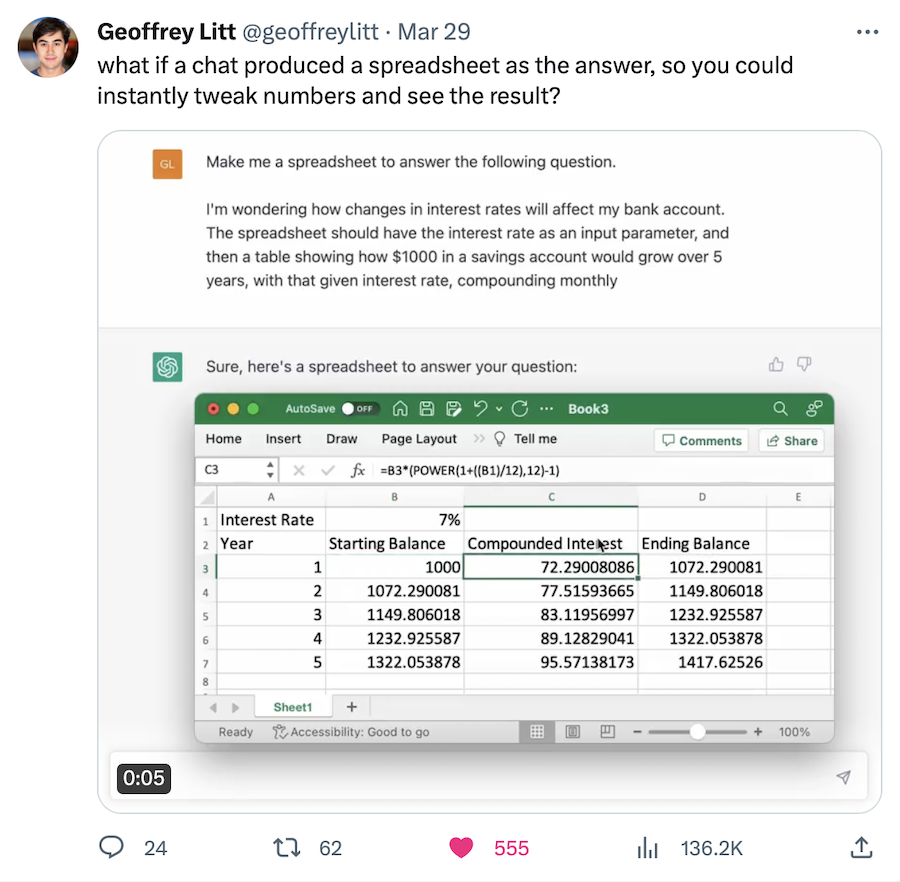
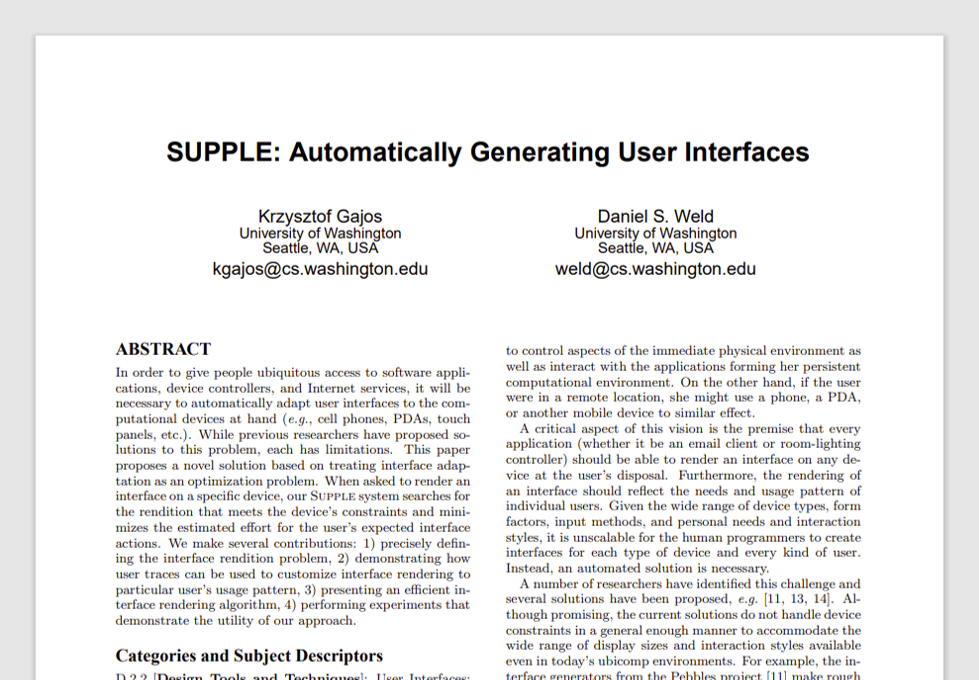

Associate Teaching Professor
Carnegie Mellon University
What if your computer generated a custom GUI for every task you do in order to make you more efficient, specific to the current context?
Lately, most of the attention has been on natural language interfaces thanks to ChatGPT. So back in January I wrote natural language is the lazy user interface. Then I followed it up with don't trap me in a chat window. And Amelia Wattenberger articulated why chatbots are not the future.
Now I think others are also seeing that natural language is not the end-all-be-all interface. Why limit yourself to one interaction paradigm, when you could have all of them?
Geoffrey Litt showed a nifty demo of ChatGPT giving you an interactive spreadsheet as part of the response.
But don't stop there. It could do more than just choosing from a small set of widgets. What if it created the interface that best suits your situation?
The idea of generating and adapting GUIs actually isn't new.
Krzysztof Gajos and Daniel Weld published a seminal paper in 2004 that showed how to generate GUIs based on a set of constraints. For example, automatically changing the size and placement of widgets based on the input device and screen size.
Jeff Huang's work evolved this idea further. What if your phone can detect if you're holding it one handed or while jogging? Then it could adapt the user interface by enlarging buttons or moving them closer to your fingers.
I want ChatGPT to give me a custom GUI on the fly that is tailored to the task at hand. Sure, sometimes natural language is efficient. Other times knobs and sliders would be better—I could tinker and get immediate feedback. Or what if I could demonstrate something and ChatGPT observes, programming-by-example style.
I'd love to someone use AI to do this in order to make interacting with AI better.
Thanks to John Lam for our recent conversations that got me thinking about this topic again.